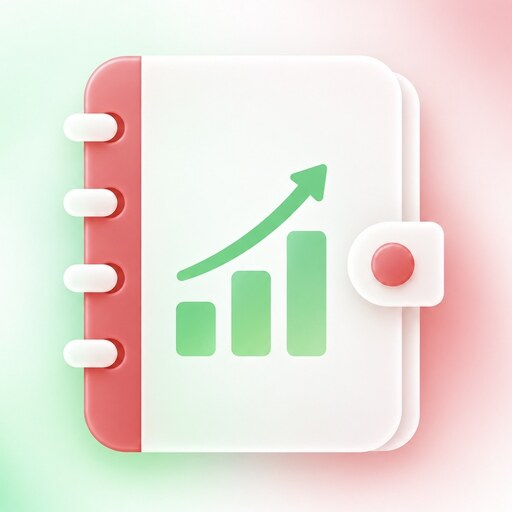
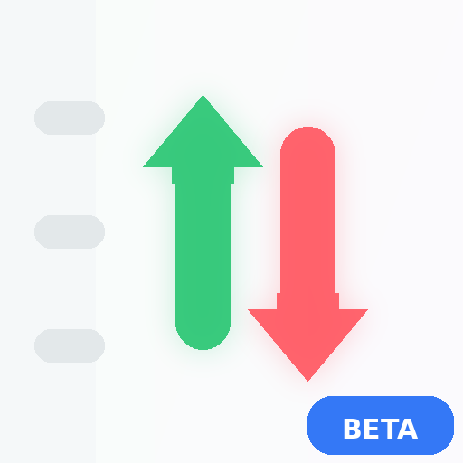

Diagnóstico
Ferramentas independentes para abrir, recuperar ou verificar o Meu Dinheiro sem apagar seus dados.
Oficial · 1.1.8

Abrir app OficialVersão estável usada no dia a dia.ESTÁVEL
›Inicializador seguroFaz uma abertura limpa antes de entregar a interface.
›Recuperar interfaceRemove somente cache/controlador. Não apaga o banco financeiro.PRESERVA DADOS
›Modo seguroLê os dados locais sem depender do aplicativo principal e permite backup.
›Beta · 1.2.0-beta.67

Abrir BetaAmbiente de testes com banco separado do Oficial.DADOS ISOLADOS
›Inicializador da BetaAbre somente o ambiente de testes em modo limpo.
›Recuperar BetaLimpa somente componentes temporários da Beta.NÃO TOCA NO OFICIAL
›Modo seguro da BetaVerifica somente o banco de testes e permite backup separado.
›Diagnóstico do navegador
Coletando…